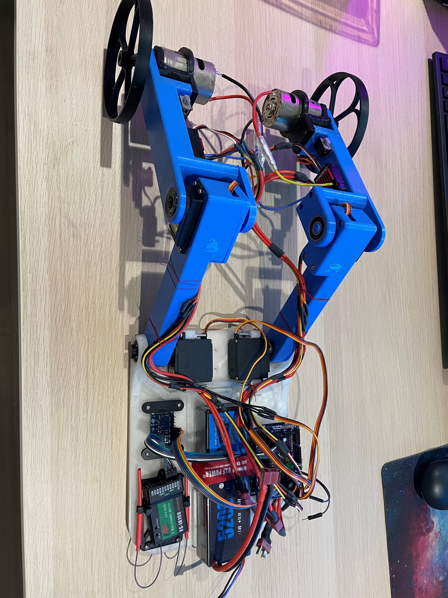
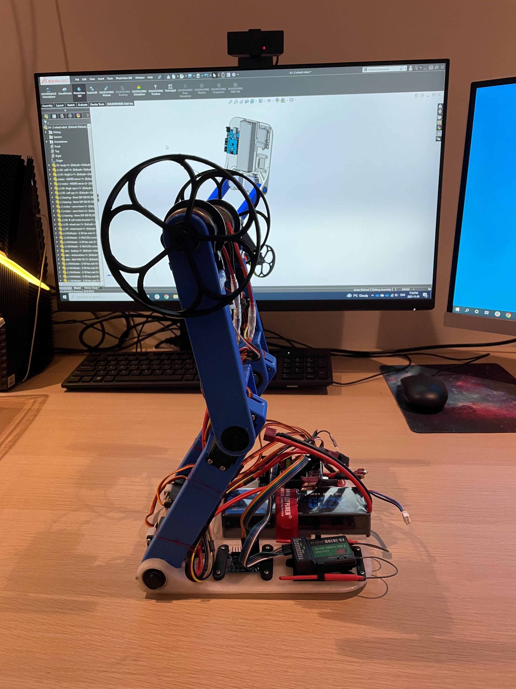

Balancing Robot
The goal of this project is to create a robot that can balance on its two legs, via active control systems. The robot is remote controlled. The robot should be able to move forward, backwards, turn and lean left or right, squat, and stand while actively balancing itself.
The first iteration is roughly 0.5 m tall and weighs 3 kg. The design was made to be 3D printed and was designed in SolidWorks. The robot uses a, 9 DOF, IMU that communicates with an Arduino Uno. The Arduino controls the 4 servo motors, which control the position of each joint. An inverse kinematic model is used to control the robot’s leg positions. The Arduino is also connected to brushed DC motors that control the speed and direction of the wheels. The remote connects to a receiver that outputs a PWM signal for each channel (control input). The Arduino reads the receiver’s signal, allowing for external control.
All the wiring and individual component work has been completed. The last steps are to: bug fix the brushed DC motor controllers and tune the PID system.
I have made the existing robot CODE and CAD available on my GitHub